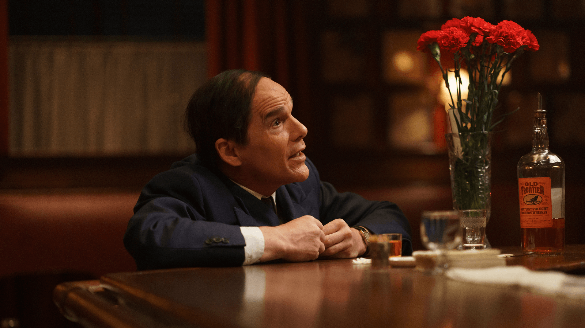
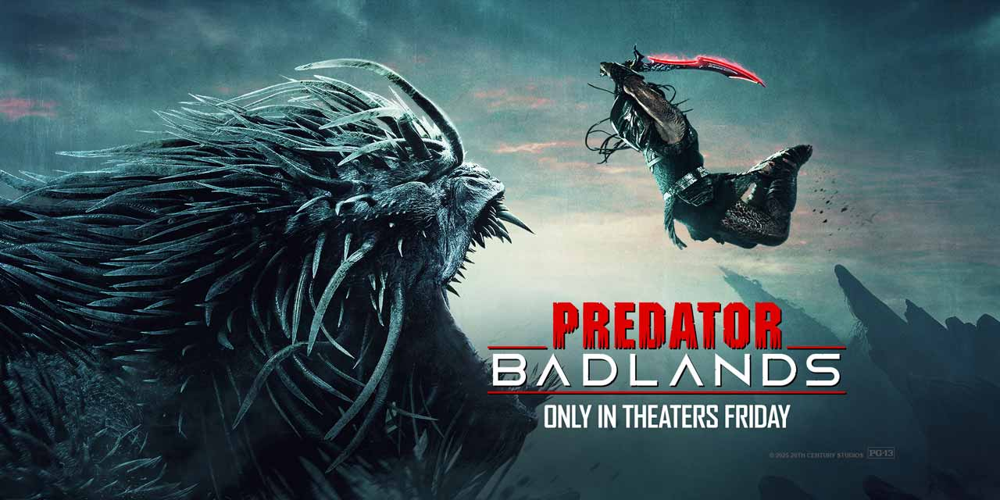
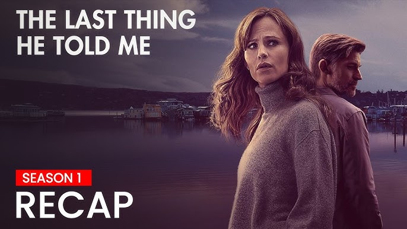
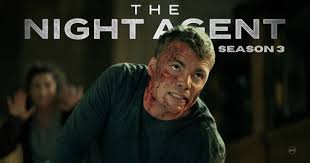

Movies and TV
5 must-watch movies & TV shows streaming right now
Kevin Slane
Published: February 20, 2026

Apocalypse Now (1979)
Based only on his collaborations with Francis Ford Coppola, actor Robert Duvall, who passed away this week at age 95, would be considered one of the great actors of his generation. Duvall asked Coppola to make his Lieutenant Colonel Kilgore less one-dimensional, and the commander is slightly more humane in the extended “Redux” version released in 2001. Moments of humanity aside, however, Kilgore is a swaggering personification of America's doomed foreign policy during the Vietnam War. “I love the smell of napalm in the morning,” says it all.
Blue Moon (2025)
Richard Linklater made one of my favorite movies of 2025 with this biopic of lyricist Lorenz Hart, whose name has been largely forgotten thanks to Hart's Broadway partner Richard Rodgers finding greater success with Oscar Hammerstein. Filmed entirely in a single bar, Ethan Hawke brings deep, agonizing pathos to the role of Hart, regaling anyone who will listen with stories of his past glories and of future dreams that will clearly never come to fruition.
Predator Badlands (2025)
Following the success of “Prey,” Dan Trachtenberg helmed another inventive entry in the Predator series, putting a teen predator (Dimitrius Schuster-Koloamatangi) and a Weyland Yutani android (Elle Fanning) on the same team as the extraterrestrial attempts to complete a coming-of-age ritual killing.
The Last Thing He Told Me (Season 2)
One of Bostonians' favorite books of the last few years was Laura Dave's “The Last Thing He Told Me,” which was turned into an Apple TV series starring Jennifer Garner. The show is back for Season 2, this time adapting Dave's sequel novel “The First Time I Saw Him,” and deepening the story of Hannah (Garner), her missing husband (Nikolaj Coster-Waldau), and his daughter (Angourie Rice).
The Night Agent (Season 3)
The first two seasons of “The Night Agent” were pretty straightforward spy thriller material, but with enough subtle flourishes to elevate the material. This season, the titular night agent, Peter (Gabriel Basso, “Hillbilly Elegy”), is headed to Istanbul to track down a Treasury Agent who has fled the country with sensitive intelligence.
Celebrity News
Kelly Clarkson opens up about end of her talk show, what's next with ‘The Voice'
Scott Stump
Published: February 22, 2026
Kelly Clarkson has opened up about why she ended her daytime talk show as she gets ready to be a coach on the upcoming Season 29 of “The Voice.” The Grammy-winning singer spoke alongside fellow “Voice” coach John Legend on TODAY Feb. 20 about why she decided now was a good time to bring the show to a close after seven seasons. “I think everybody probably gets the timing,” she told Carson Daly. “Our family life, the dynamic changed a bit, and it has changed for a minute now. You got kids, we've all got kids, and it's one of those things when you kind of start seeing life as how precious it is, too. It's like, 'You know what, I'm really busy.’” Clarkson is a mom to daughter River Rose, 11, and son Remy, 9, whom she welcomed with her late ex-husband, Brandon Blackstock. He died at 48 in August 2025 after three years of being treated for cancer.
“I was like, 'I know everybody thinks she's like quitting,’” Clarkson said about the show. “I'm like, 'I still have other jobs, so I'm still doing stuff.' There's just too much on the plate, so I was like you know what, it's time to pull back.” The decision was a difficult one for Clarkson between the success of the show and the close-knit relationship with the staff. “That's what was really hard,” she said. “I work with a lot of people here, too. The crew's been incredible, it wasn't that the show isn't doing well. That's what kind of sucked, everything was going well, and that's what was really hard.
“That was a really hard thing for me, but an easy decision as a momma.” Clarkson and Legend also gave a preview of Season 29 of “The Voice”— which features a new wrinkle, in that there will only be three coaches instead of the usual four. Out of her nine previous seasons on the show, Clarkson is a four-time winning coach. “I have won the most, if you're counting,” she joked. “It was part of my pitch.” Her team will face off against teams coached by two other icons of the hit NBC talent show, Legend and Adam Levine, in “The Voice: Battle of Champions.” Clarkson also said on TODAY the show will be bringing back some past champions this season as she makes her return to “The Voice” for the first time since Season 23 in 2023.